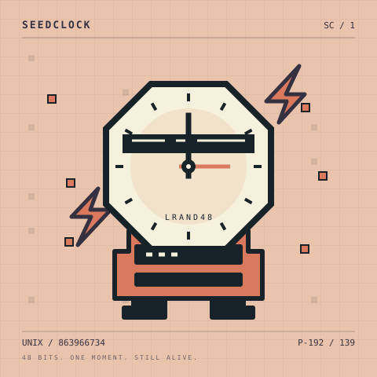
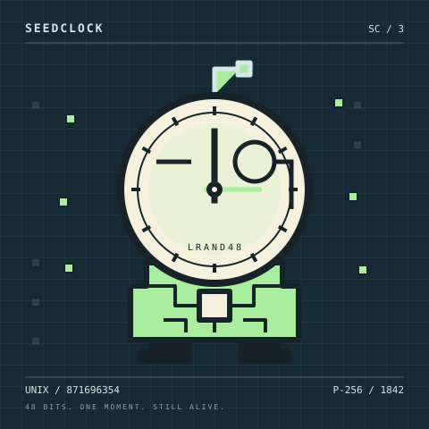
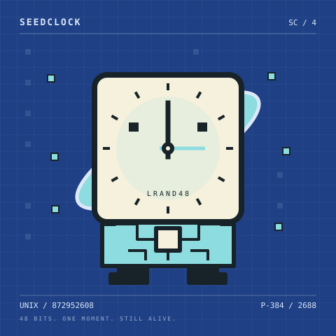
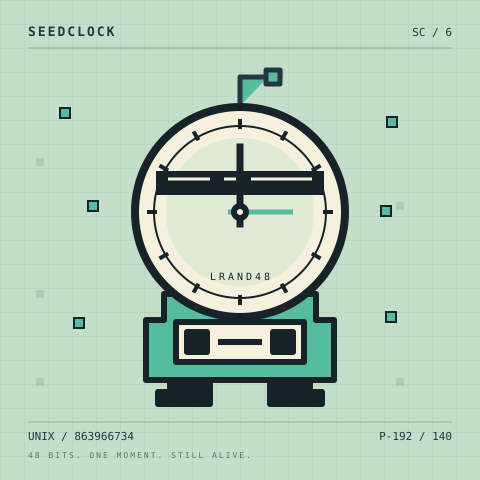
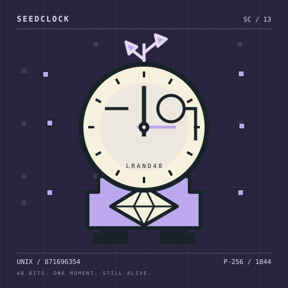
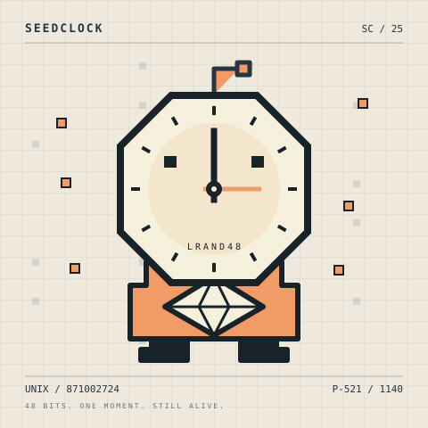

SeedClock — on-chain art preview
SCLOCK / GENERATIVE ARCHIVE
A moment, still alive.
Six clocks from the fully on-chain SeedClock renderer. Every shape, color and movement comes from a recovered Unix timestamp and a deterministic candidate seed.

#0001 Oxide

#0003 Midnight

#0004 Cobalt

#0006 CRT Mint

#0013 Violet Terminal

#0025 Parchment